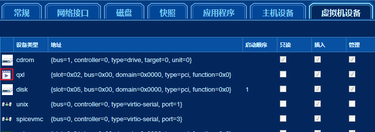

1. 构造输出选项
不管任何输入选项是什么，转换到ovirt平台的转换脚本的输出选项都是统一的。
选项列表如下：
--export-path：ovirt平台的导出域的路径。--format：转换之后磁盘的格式，支持raw与qcow2两种格式。可选选项，默认为raw。--verbose：详细输出模式。可选选项，默认不开启。--log：使用日志文件记录转换脚本的控制台输出。可选选项，默认无。
举例说明：
现在有一个NFS类型的导出域（不是数据域！）在172.16.2.124的服务器上面，导出域的存储目录是/home/exports，那么该导出域的路径就是172.16.2.124:/home/exports；也可以手动挂载远程服务器的导出域到转换服务器，那么导出域的路径就是挂载点。
那么转换脚本的输出选项构造如下：
--export-path 172.16.2.124:/home/exports --format qcow2 --verbose --log centos-convert.log
注意：如果导出路径指定的是远程服务器的路径，那么导出域的类型一定要是NFS，在导出之前应确保导出域能够挂载到转换服务器上面。必须有充足的空间存储转换后的虚拟机磁盘。
2. 执行转换
通过前面的文档，已经获取了输入选项和输出选项的内容，下一步就是将它们填入下面的命令格式中，执行转换。
脚本在命令行按以下格式执行：
convert 输入选项 输出选项
举例说明
转换场景：想要转换VMware Workstation上的一台虚拟机到ovirt平台。
1.首先通过上述的构造输入选项的参考文档1.ova转换模式获取了一台虚拟机的ova文件（centos.ova），并构造了输入选项：
--mode ova --file centos.ova
2.然后通过上述的构造输出选项的参考文档转换到ovirt平台构造了输出选项：
--export-path 172.16.2.124:/home/exports
3.将输入选项和输出选项填入之后就可以在转换服务器上面执行命令转换虚拟机：
convert --mode ova --file centos.ova --export-path 172.16.2.124:/home/exports
3. 导入虚拟机
转换脚本执行成功之后，虚拟机存放在导出域中，还不能直接使用，需要在ovirt的engine管理平台从导出域导入虚拟机。
导入虚拟机后查看虚拟机设备中的视频类型：

如果是video等不支持的格式，需要编辑虚拟机的高级选项改变视频类型为以下三种之一（如果选择QXL，需要先选择其他两种点击确定按钮，然后再次选择QXL才可以）。